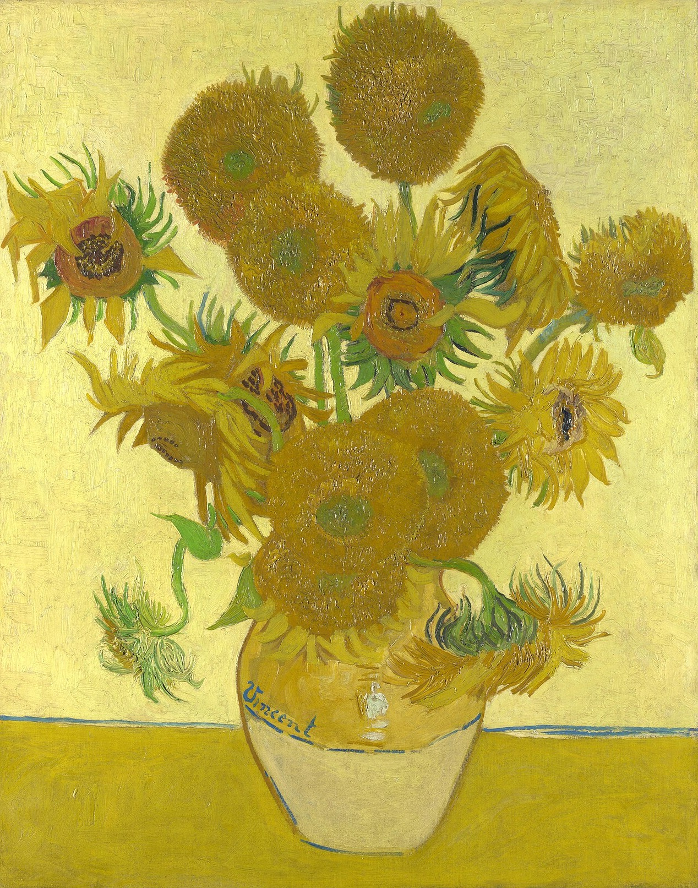
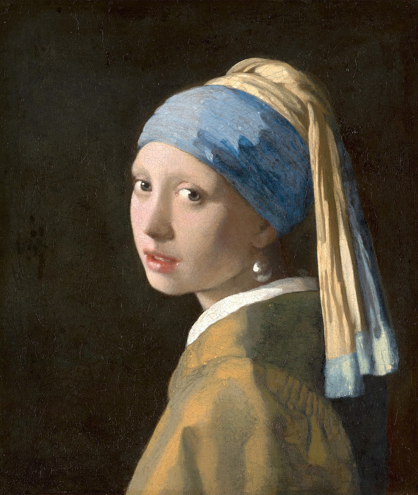
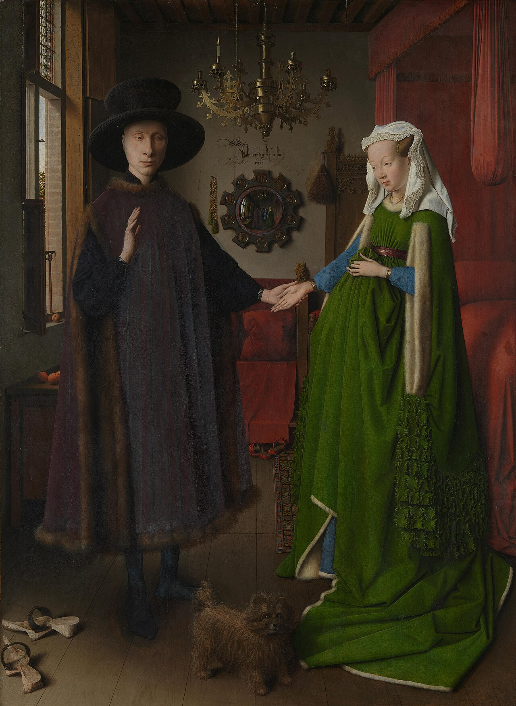
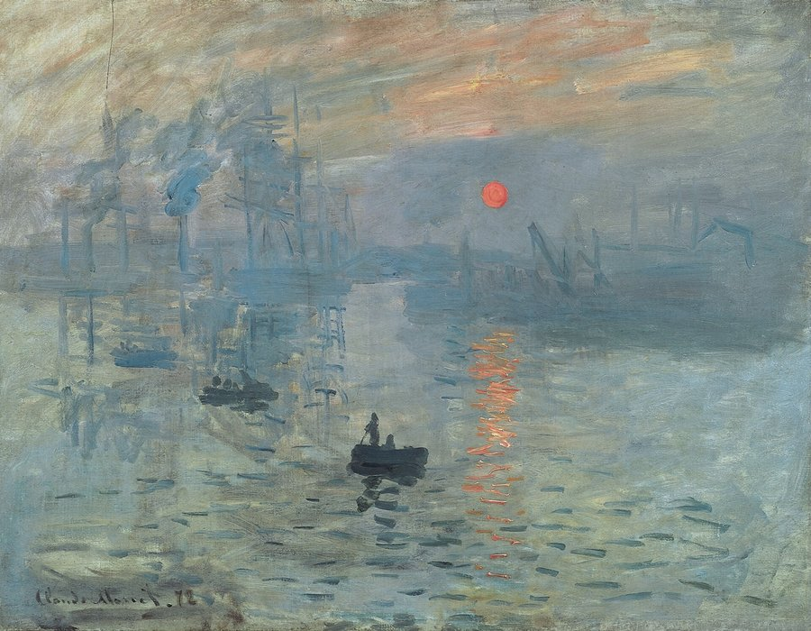
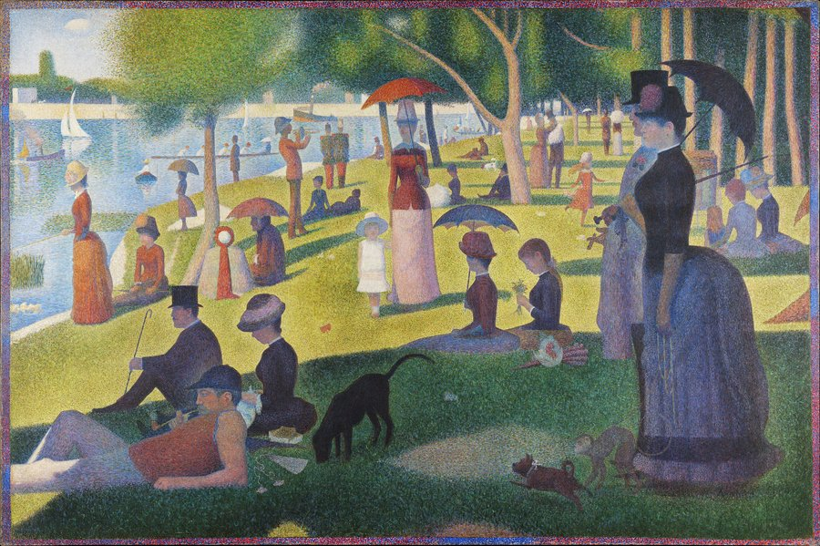
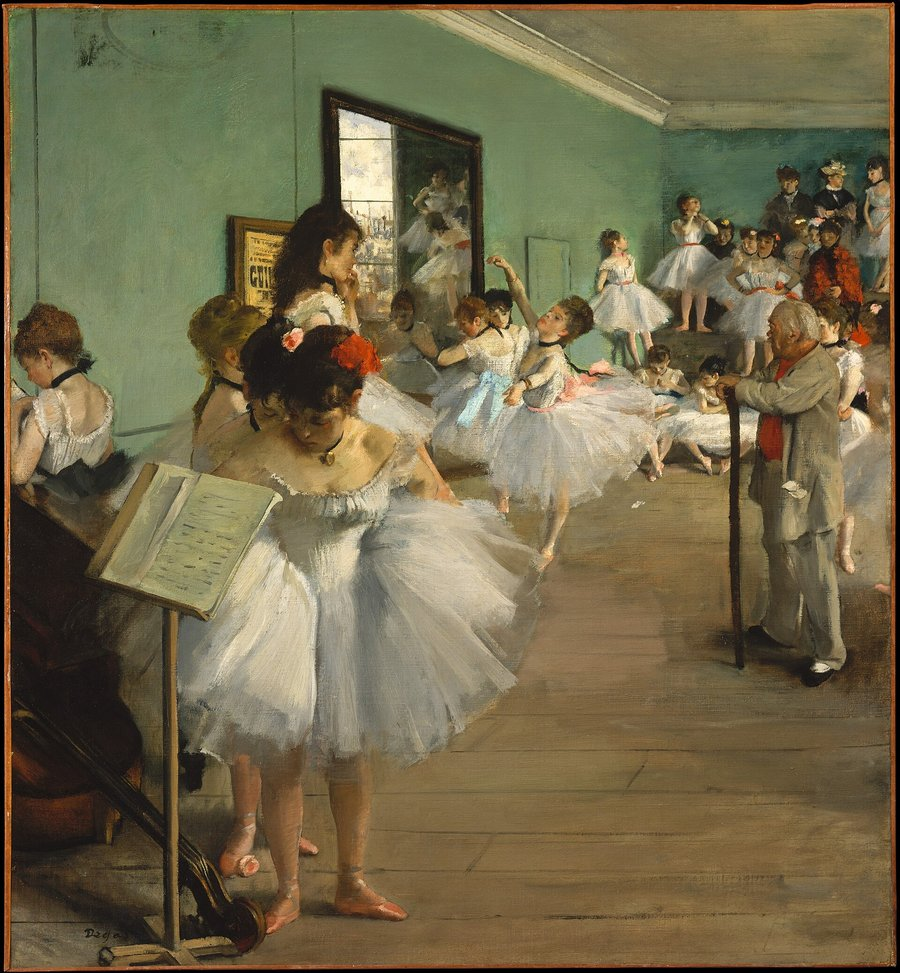
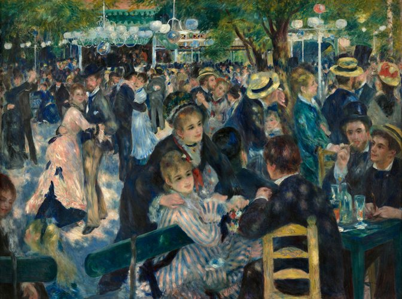
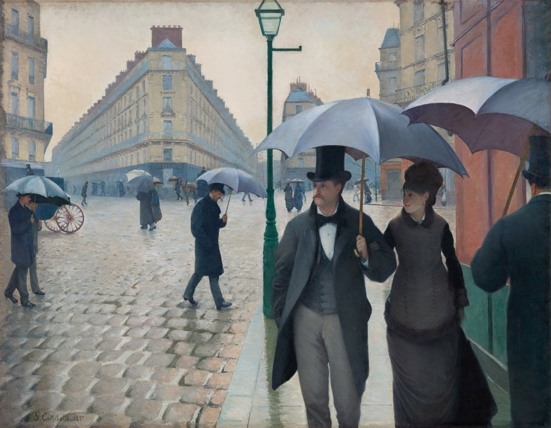
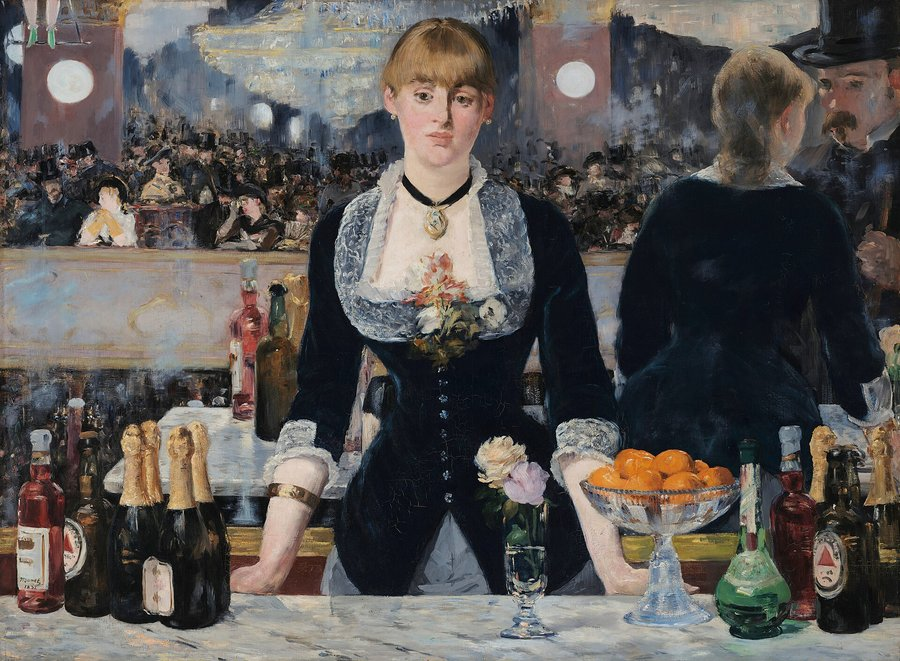

按画家 · By artist
梵高 · Vincent van Gogh（1853–1890）

可以走进去的画 · Paintings you can step into
- 吃土豆的人 · The Potato Eaters · 1885年4–5月 · April–May 1885 · 阿姆斯特丹梵高博物馆 · Van Gogh Museum, Amsterdam
- 阿尔勒的卧室 · The Bedroom · 1888 · 阿姆斯特丹梵高博物馆 · Van Gogh Museum, Amsterdam
- 黄房子 · The Yellow House · 1888 · 阿姆斯特丹梵高博物馆 · Van Gogh Museum, Amsterdam
- 夜间咖啡馆 · The Night Café · 1888 · 耶鲁大学美术馆 · Yale University Art Gallery
- 夜晚露天咖啡座 · Café Terrace at Night · 1888 · 荷兰克勒勒-米勒博物馆 · Kröller-Müller Museum
- 罗纳河上的星夜 · Starry Night over the Rhône · 1888 · 巴黎奥赛博物馆 · Musée d'Orsay, Paris
- 向日葵 · Sunflowers · 1888 · 伦敦国家美术馆 · The National Gallery, London
- 梵高的椅子 · Van Gogh's Chair · 1888 · 伦敦国家美术馆 · The National Gallery, London
- 包扎耳朵的自画像 · Self-Portrait with Bandaged Ear · 1889年1月 · January 1889 · 伦敦考陶尔德美术馆 · The Courtauld Gallery, London
- 鸢尾花 · Irises · 1889年5月 · May 1889 · 洛杉矶盖蒂博物馆 · J. Paul Getty Museum, Los Angeles
- 星夜 · The Starry Night · 1889 · 纽约现代艺术博物馆 · The Museum of Modern Art (MoMA), New York
- 麦田与柏树 · A Wheatfield, with Cypresses · 1889 · 伦敦国家美术馆 · The National Gallery, London
- 杏花 · Almond Blossom · 1890年2月 · February 1890 · 阿姆斯特丹梵高博物馆 · Van Gogh Museum, Amsterdam
生平 · Life
- 1853 · 生于荷兰津德尔特 / Born in Zundert, the Netherlands
- 约1880 / c. 1880 · 将近27岁时决定成为画家 / Decides to become an artist, around age 27
- 1883年12月 / December 1883 · 回到纽南父母家 / Returns to his parents' home in Nuenen
- 1885年4–5月 / April–May 1885 · 画下《吃土豆的人》 / Paints The Potato Eaters → 吃土豆的人 · The Potato Eaters
- 1886 · 来到巴黎 / Moves to Paris
- 1888年2月 / February 1888 · 来到法国南部的阿尔勒 / Arrives in Arles, in the south of France
- 1888年5月 / May 1888 · 租下黄房子的四个房间 / Rents four rooms in the Yellow House → 黄房子 · The Yellow House
- 1888年8月 / August 1888 · 画向日葵，为高更布置客房 / Paints Sunflowers to decorate the guest room for Gauguin → 向日葵 · Sunflowers
- 1888年9月 / September 1888 · 住进黄房子 / Moves into the Yellow House
- 1888年9月 / September 1888 · 夜间咖啡馆、夜晚露天咖啡座、罗纳河上的星夜 / Paints The Night Café, Café Terrace at Night and Starry Night over the Rhône → 夜间咖啡馆 · The Night Café · 夜晚露天咖啡座 · Café Terrace at Night · 罗纳河上的星夜 · Starry Night over the Rhône
- 1888年10月 / October 1888 · 画下卧室；高更到来 / Paints The Bedroom; Gauguin arrives → 阿尔勒的卧室 · The Bedroom
- 1888年11月 / November 1888 · 画下两把椅子 / Paints Van Gogh's Chair and Gauguin's Chair → 梵高的椅子 · Van Gogh's Chair
- 1888年12月 / December 1888 · 梵高精神崩溃住院，高更离开阿尔勒 / Van Gogh breaks down and is hospitalised; Gauguin leaves Arles → 包扎耳朵的自画像 · Self-Portrait with Bandaged Ear
- 1889年1月 / January 1889 · 出院一周后，画下《包扎耳朵的自画像》 / A week after leaving hospital, paints Self-Portrait with Bandaged Ear → 包扎耳朵的自画像 · Self-Portrait with Bandaged Ear
- 1889年5月 / May 1889 · 自愿住进圣雷米疗养院，在花园里画下《鸢尾花》 / Voluntarily enters the asylum at Saint-Rémy; paints Irises in the garden → 鸢尾花 · Irises
- 1889年6月 / June 1889 · 画下《星夜》 / Paints The Starry Night → 星夜 · The Starry Night
- 1889年6–7月 / June–July 1889 · 在麦田边画下《麦田与柏树》习作（现藏大都会） / Paints a study of A Wheatfield, with Cypresses on site (now at the Met)
- 1889年9月 / September 1889 · 完成《麦田与柏树》定稿；重画卧室 / Completes A Wheatfield, with Cypresses; paints The Bedroom again → 麦田与柏树 · A Wheatfield, with Cypresses · 阿尔勒的卧室（1889年9月版） · The Bedroom (September 1889 version)
- 1890年初 / Early 1890 · 侄子文森特·威廉出生 / His nephew Vincent Willem is born
- 1890年2月 / February 1890 · 画下《杏花》 / Paints Almond Blossom → 杏花 · Almond Blossom
- 1890年5月 / May 1890 · 搬到巴黎附近的奥维尔 / Moves to Auvers-sur-Oise, near Paris
- 1890年7月 / July 1890 · 去世，年仅37岁 / Dies, aged 37
维米尔 · Johannes Vermeer（1632–1675）

可以走进去的画 · Paintings you can step into
- 小街 · The Little Street · 约1658 · c. 1658 · 阿姆斯特丹荷兰国立博物馆 · Rijksmuseum, Amsterdam
- 倒牛奶的女仆 · The Milkmaid · 约1660 · c. 1660 · 阿姆斯特丹荷兰国立博物馆 · Rijksmuseum, Amsterdam
- 代尔夫特一景 · View of Delft · 约1660–61 · c. 1660–61 · 海牙莫瑞泰斯皇家美术馆 · Mauritshuis, The Hague
- 读信的蓝衣女子 · Woman Reading a Letter · 约1663 · c. 1663 · 阿姆斯特丹荷兰国立博物馆 · Rijksmuseum, Amsterdam
- 戴珍珠耳环的少女 · Girl with a Pearl Earring · 约1665 · c. 1665 · 海牙莫瑞泰斯皇家美术馆 · Mauritshuis, The Hague
- 绘画艺术 · The Art of Painting · 约1666/68 · about 1666/68 · 维也纳艺术史博物馆 · Kunsthistorisches Museum, Vienna
- 情书 · The Love Letter · 约1669–约1670 · c. 1669–c. 1670 · 阿姆斯特丹荷兰国立博物馆 · Rijksmuseum, Amsterdam
- 花边女工 · The Lacemaker · 约1669–70 · c. 1669–70 · 巴黎卢浮宫 · Musée du Louvre, Paris
- 站在维金纳琴前的年轻女子 · A Young Woman standing at a Virginal · 约1670–72 · about 1670–2 · 伦敦国家美术馆 · The National Gallery, London
扬·凡·艾克 · Jan van Eyck（约1390–1441 / c. 1390–1441）

可以走进去的画 · Paintings you can step into
其他代表作 · More famous works
这些作品暂时还不能走进去，但值得去博物馆看看。 You can't step into these yet, but they're worth seeing in person.
- 根特祭坛画 / The Ghent Altarpiece — 1432 · 根特圣巴夫主教座堂 / St Bavo's Cathedral, Ghent
- 戴红头巾的男子 / Portrait of a Man (Man in a Red Turban) — 1433 · 伦敦国家美术馆 / The National Gallery, London
莫奈 · Claude Monet（1840–1926）

可以走进去的画 · Paintings you can step into
其他代表作 · More famous works
这些作品暂时还不能走进去，但值得去博物馆看看。 You can't step into these yet, but they're worth seeing in person.
- 日出·印象 / Impression, Sunrise — 1872 · 玛摩丹·莫奈美术馆 / Musée Marmottan Monet, Paris
- 撑阳伞的女人 / Woman with a Parasol — 1875 · 华盛顿国家美术馆 / National Gallery of Art, Washington
- 圣拉扎尔火车站 / The Saint-Lazare Station — 1877 · 巴黎奥赛博物馆 / Musée d'Orsay, Paris
- 睡莲系列 / Water Lilies — 橘园美术馆 / Musée de l'Orangerie, Paris
- 鲁昂大教堂系列 / Rouen Cathedral series — 1892–94 · 多家博物馆，含奥赛 / Several museums, including the Musée d'Orsay
- 干草堆系列 / Haystacks (Stacks of Wheat) series — 1890–91 · 多家博物馆，含芝加哥艺术博物馆 / Several museums, including the Art Institute of Chicago
修拉 · Georges Seurat（1859–1891）

可以走进去的画 · Paintings you can step into
其他代表作 · More famous works
这些作品暂时还不能走进去，但值得去博物馆看看。 You can't step into these yet, but they're worth seeing in person.
- 大碗岛的星期天下午 / A Sunday on La Grande Jatte — 1884 — 1884–86 · 芝加哥艺术博物馆 / Art Institute of Chicago
- 马戏团 / The Circus — 1891 · 巴黎奥赛博物馆 / Musée d'Orsay, Paris
德加 · Edgar Degas（1834–1917）

可以走进去的画 · Paintings you can step into
其他代表作 · More famous works
这些作品暂时还不能走进去，但值得去博物馆看看。 You can't step into these yet, but they're worth seeing in person.
- 舞蹈课 / The Dance Class — 1873–76 · 巴黎奥赛博物馆 / Musée d'Orsay, Paris
- 明星 / The Star (L'Étoile) — 约1876–1877 / c. 1876–77 · 巴黎奥赛博物馆 / Musée d'Orsay, Paris
- 苦艾酒 / In a Café (The Absinthe) — 1875–76 · 巴黎奥赛博物馆 / Musée d'Orsay, Paris
- 贝列利一家 / The Bellelli Family — 1858–69 · 巴黎奥赛博物馆 / Musée d'Orsay, Paris
- 十四岁的小舞者 / Little Dancer Aged Fourteen — 雕塑，原始蜡像 / Sculpture, original wax · 1878–81 · 华盛顿国家美术馆 / National Gallery of Art, Washington
雷诺阿 · Pierre-Auguste Renoir（1841–1919）

可以走进去的画 · Paintings you can step into
其他代表作 · More famous works
这些作品暂时还不能走进去，但值得去博物馆看看。 You can't step into these yet, but they're worth seeing in person.
- 煎饼磨坊的舞会 / Dance at Le Moulin de la Galette — 1876 · 巴黎奥赛博物馆 / Musée d'Orsay, Paris
- 游艇上的午宴 / Luncheon of the Boating Party — 1880–81 · 菲利普斯收藏馆 / The Phillips Collection, Washington
- 包厢 / La Loge (The Theatre Box) — 1874 · 伦敦考陶尔德美术馆 / The Courtauld Gallery, London
- 两姐妹 / Two Sisters (On the Terrace) — 1881 · 芝加哥艺术博物馆 / Art Institute of Chicago
- 布吉瓦尔之舞 / Dance at Bougival — 1883 · 波士顿美术馆 / Museum of Fine Arts, Boston
卡耶博特 · Gustave Caillebotte（1848–1894）

可以走进去的画 · Paintings you can step into
其他代表作 · More famous works
这些作品暂时还不能走进去，但值得去博物馆看看。 You can't step into these yet, but they're worth seeing in person.
- 巴黎街道，雨天 / Paris Street; Rainy Day — 1877 · 芝加哥艺术博物馆 / Art Institute of Chicago
- 刨地板的工人 / The Floor Scrapers — 1875 · 巴黎奥赛博物馆 / Musée d'Orsay, Paris
马奈 · Édouard Manet（1832–1883）

可以走进去的画 · Paintings you can step into
其他代表作 · More famous works
这些作品暂时还不能走进去，但值得去博物馆看看。 You can't step into these yet, but they're worth seeing in person.
- 杜伊勒里花园的音乐会 / Music in the Tuileries Gardens — 1862 · 伦敦国家美术馆，与都柏林休·莱恩美术馆轮流展出 / Shared with the Hugh Lane Gallery, Dublin; the two galleries display it in turn.
- 草地上的午餐 / Luncheon on the Grass — 1863 · 巴黎奥赛博物馆 / Musée d'Orsay, Paris
- 吹笛少年 / The Fifer — 1866 · 巴黎奥赛博物馆 / Musée d'Orsay, Paris